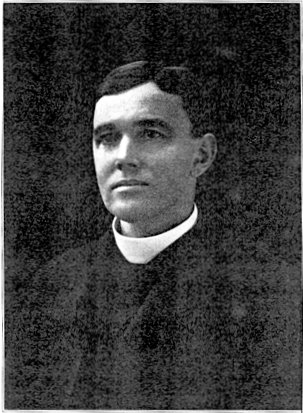

S. Ephraim's Prose Refutations of Mani, Marcion and Bardaisan. Transcribed from the Palimpsest B.M. Add. 14623 by the late C. W. MITCHELL, M.A., C.F., volume 2 (1921). Introduction
President
PROFESSOR F. C. BURKITT, CAMBRIDGE.
Vice-President
Mr. NORMAN MCLEAN, University Lecturer in Aramaic, Cambridge.
hon. Treasurer
Dr. A. COWLEY, Bodley's Librarian, Oxford.
Committee
The Rev. Professor W. E. BARNES, Cambridge.
Dr. J. SUTHERLAND BLACK, Joint Editor of the Encyclopaedia Biblica.
Mr. F. C. CONYBEARE, formerly Fellow of University College, Oxford.
Dr. S. A. COOK, Fellow of Gonville and Caius College, Cambridge.
Mr. A. G. ELLIS, India Office.
The Very Rev. J. ARMITAGE ROBINSON, Dean of Wells.
Mr. J. F. STENNING, Fellow of Wadham College, Oxford.
hon. Secretary
Miss CARTHEW, 6, Albert Place, Kensington, London, W.

THE REV. CHARLES WAND MITCHELL, M.A., C.F.
OF MANI, MARCION, AND BARDAISAN
TRANSCRIBED FROM THE PALIMPSEST B.M. ADD. 14623
BY THE LATE
C. W. MITCHELL, M.A., C.F.
FORMERLY RESEARCH STUDENT EMMANUEL COLLEGE, CAMBRIDGE
AND COMPLETED BY
A. A. BEVAN
AND
F. C. BURKITT
VOLUME II
THE DISCOURSE CALLED 'OF DOMNUS' AND SIX OTHER WRITINGS
PUBLISHED FOR THE TEXT AND TRANSLATION SOCIETY
BY
WILLIAMS AND NORGATE
14, HENRIETTA STREET, COVENT GARDEN, LONDON,
AND 7, BROAD STREET, OXFORD
1921
PRINTED IN GREAT BRITAIN
BY
WILLIAM CLOWES & SONS, LIMITED, LONDON AND BECCLES.
THE present Volume is the continuation and completion of that published in 1912 for the Text and Translation Society by the late C. W. Mitchell. After Mr. Mitchell's death at the Front (3rd May, 1917), the various papers and proof-sheets belonging to this work were placed in the hands of Prof. A. A. Bevan and of the present writer, then away in France. On a survey of the material it appeared that about half the Syriac text (pp. 1-128) had been passed for press and printed off; a good deal of the remainder was in type, but only partly corrected, and some was still only in MS. About half the translation was made, but still needing revision. Professor Bevan and I have therefore completed the text and the translation, and I have verified the Syriac, as far as my eyes would go, with the Palimpsest in the British Museum. We have further compiled a list of passages where corrections were necessary, both in the former Volume and in the earlier part of this.
I should have wished that at least part of the Introductory Essay might have been Mr. Mitchell's work, but the only thing of the sort among his papers was a rough draft of an Introduction, written before Volume I. was published, when what he had deciphered from the Palimpsest was a mere collection of detached fragments, not a continuous text. This being the case, no other course was open to me but to write a wholly new chapter, explanatory of the documents here edited.
CHARLES WAND MITCHELL, son of Mr. Robert Mitchell, Maple Braes, Lennoxville, Quebec, was born April 9, 1878. He was educated first at the little country school near his home, then at the Lennoxville Academy; he then had a distinguished career at Bishop's College University, Lennoxville, ending as a Lecturer in 1901. He came up to Cambridge in 1902 as an Advanced Student, passing the required standard in the Theological Tripos in 1903 and the Oriental Languages Tripos (Hebrew and Aramaic) in 1904. He must have worked hard and been well trained in |iv Canada, for in 1903 his knowledge and power of expression was much above that of the average student, and it was no surprise to those who had seen his work to hear that he gained the Tyrwhitt University Scholarship (Hebrew) in 1903, and the Jeremie Prize (Septuagint, etc.) in 1904.1
In the following year (1905) Mitchell was appointed Hebrew Master at Merchant Taylors' School, London, a post which he held till he went out to the Front as a Chaplain. He was ordained in 1907, and took his M.A. in 1912.
The very sympathetic notices that appeared in various papers and periodicals at the time of Mitchell's death speak of his varied interests in Merchant Taylors' School, in the parish work of S. Thomas, Telford Park, Streatham Hill, with which he was connected, and of his admirable devotion as an Army Chaplain in the most acute form of Active Service. It is right here, however, to give the chief place to his services to Oriental scholarship, by which indeed he will be permanently remembered.
A full though characteristically modest account of his work of decipherment will be found in the Preface to Volume I. Mitchell had begun before he left Cambridge to work at the portion of S. Ephraim's Prose Refutations, which had been published by Overbeck in 1865, but never translated into English; 2 his new post at Merchant Taylors' School allowed him leisure and also easy access to the British Museum, where the MS. of the Refutations has its home. This MS., which in its original state must have been a very handsome book, now survives in two parts, very differently preserved. The first 19 leaves (i.e. two quires) are very much in their original condition; they are as legible to-day as when they were written some 1400 years ago, and any one who knows the Syriac alphabet and the ordinary rules of Syriac grammar can transcribe them. This is the portion published long ago by Overbeck (B.M. Add. 14574). The remaining 88 leaves (i.e. nine quires), or very nearly five-sixths of the whole, were turned into a Palimpsest in 823 A.D.; that is to say, the quires were unbound, the sheets of vellum washed, so that the writing was effaced, and then when covered with fresh writing the leaves were bound up into a new volume (B.M. Add. 14623), the new order of the leaves being of course |v quite different from the old. These operations were very thoroughly carried out. It is difficult entirely to eradicate older writing in this way, but the excellent facsimiles given in Vol. I. will shew the reader that the MS. has a most discouraging appearance to any one who sets out to read the older text. I myself had spent some time over it twenty years ago, and did not feel inclined to go on.3 It was Mitchell's great merit that he had the courage to go on. He began to copy out what he found legible, and gradually the new fragments amounted to a considerable body of text, which he began to print.
In 1908 the work of printing was stopped by what he describes as 'a fortunate turn of events,' i.e. by the decision of Dr. Barnett, keeper of Oriental manuscripts in the British Museum, to apply a reagent to the illegible portions of the palimpsest. The happy result is described in Mitchell's preface. What however is not to be found there is a statement of the fact that it was Mitchell's patience and perseverance in transcribing so much of the faded writing that moved the authorities of the British Museum to relax their usual rules.
It is not to be supposed that even after the reagent has been applied it is an easy matter to make out the older writing of B.M. Add. 14623. It is hard enough to verify what has been correctly deciphered, and doubly difficult to make out the text for the first time. To do it needs patience, determination, a good knowledge of Syriac idiom and of Ephraim's style, and specially good and trained eyesight. All these Mitchell had, with the result that he was able to transcribe whole columns of text that at first sight seem absolutely invisible. He made mistakes now and then, of course, but the general correctness of his decipherments has been attested by the discovery in other MSS. of short extracts from the Refutations.4
The text of these Refutations, which shed such a flood of light upon religious and philosophical thought in the Euphrates Valley sixteen centuries ago, will always be connected with the name of C. W. Mitchell, but his interests and activities were in no way confined to the past. He was a man of fine physique, and an enthusiastic teacher and leader of boys and young men. And he never forgot that he was a Canadian. When the first Canadian contingent came over and landed at Plymouth he felt it impossible that they should be in the post of danger and he stay behind in England, and in 1915 he became a Chaplain to the Forces, first |vi at Shorncliffe, then with Bishop Gwynne during the winter of 1915-16 at General Head Quarters, and finally, as he wished, he went to the Front as Chaplain to the 8th Battalion East Yorks.
I have written, at length about Mitchell's services to Oriental and Patristic literature, because this is the place to do so and because his permanent fame will be connected with that side of his activity. But I have no doubt, if testimony be worth anything in human affairs, that it was as a Padre in the very Front Line that he found the life that was most congenial to his whole being. "One sees here," he wrote to me from France (28 Feb., 1916), "another palimpsest: and ancient features in town and countryside are disappearing beyond all the subtleties of chemistry to restore." Yet he was still more concerned about his men. "He was always up near the men," wrote Col. de la Perelle, his Commanding Officer, himself a Canadian, "nothing on earth could keep him away;" and it was while he was helping the doctor to bandage the wounded near the firing, line that he was fatally wounded near Monchy, on May 3, 1917.
It is impossible not to regret that one who had so many and such varied gifts of service and encouragement for his fellow-countrymen should have had his career cut short so early. But this at any rate may be said of C. W. Mitchell, that it was given to him to exhibit the example of a life of singular consistency, devoted to the highest ideals that he saw before him. His decipherment of S. Ephraim's Refutations is a permanent contribution to Syriac literature and to the understanding of ancient religious ideas, and when in the future scholars ask what manner of man it was that made this contribution to our knowledge of the distant Past, they will learn that it was one who felt he could not give real help and real encouragement to men in danger and discomfort without himself sharing in the danger and discomfort to which they were exposed, and who met an early death because he did share in the dangers of these others.
He lies buried outside Arras, near the Amiens Gate.
" A good life hath but few days :
But a good name endureth for
ever." 5
F. C. BURKITT.
ST. EPHRAIM'S REFUTATIONS
VOLUME II
1. * As an "Advanced Student" under the then regulations Mitchell's name does not appear in the regular Class List, but merely as having attained the required standard.
2. + A not very satisfactory German translation is given in K. Kessler's Mani (Berlin, 1889).
3. * My results were published in S. Ephraim's Quotations from the Gospel (Texts and Studies vii 2), Cambridge, 1901, pp. 73, 74.


This text was transcribed by Roger Pearse, Ipswich, UK, 10th September 2002. All material on this page is in the public domain - copy freely.
Greek text is rendered using the Scholars Press SPIonic font, free from here.
| Early Church Fathers - Additional Texts |